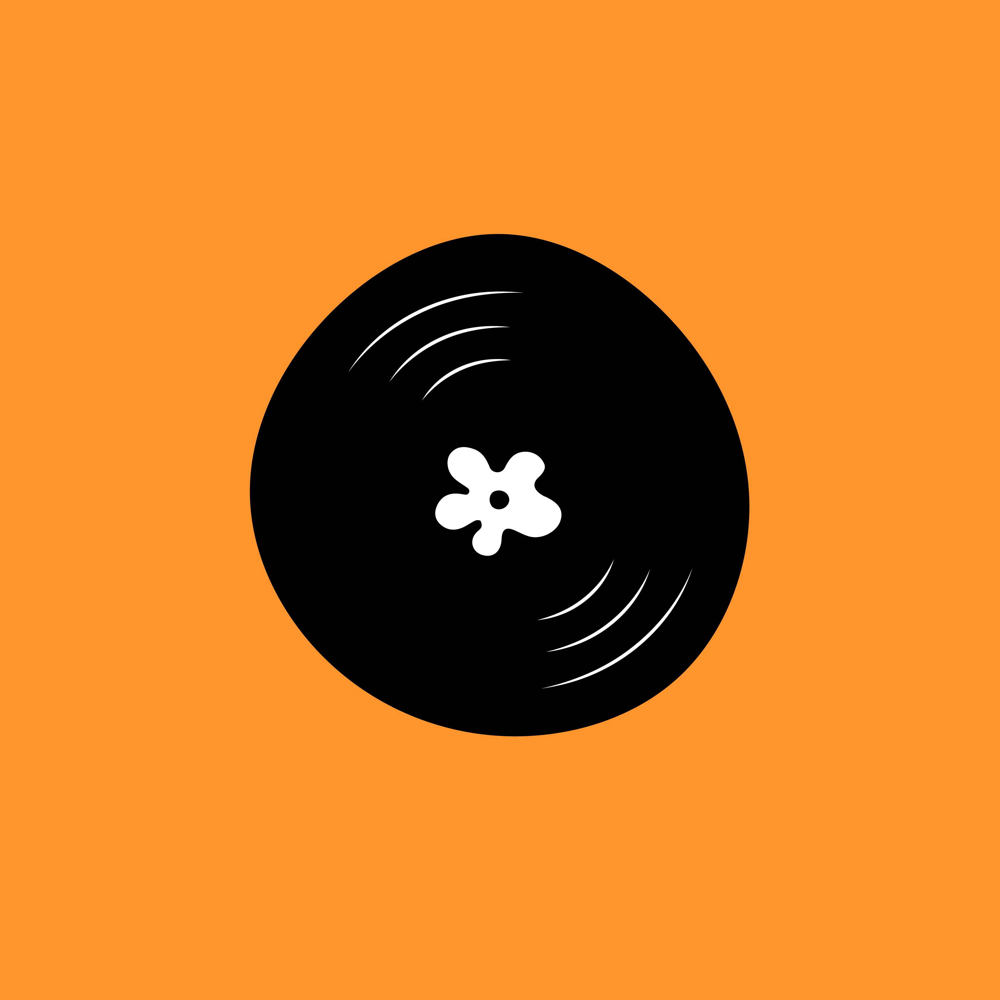

The Daisy Corner is a women-run artist collective in Philly that specializes in music
production and social media marketing. They are focused on making meaningful
connections and uplifting artists.
I delved into the process of creating a logo that perfectly captures the essence of
The Daisy Corner - a whimsical yet professional design that is instantly recognizable.
With the ability to swap out the color of the flowers, this allows for various
implementations of the logo.
The record symbol is a secondary logo mark that draws inspiration from their focus on
the music industry and is designed for use on social media and merch.